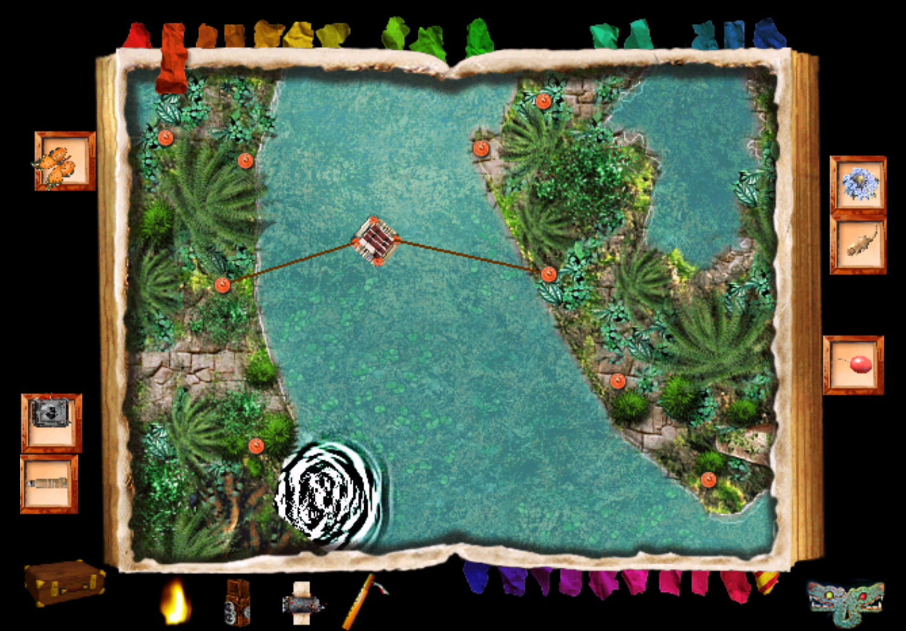
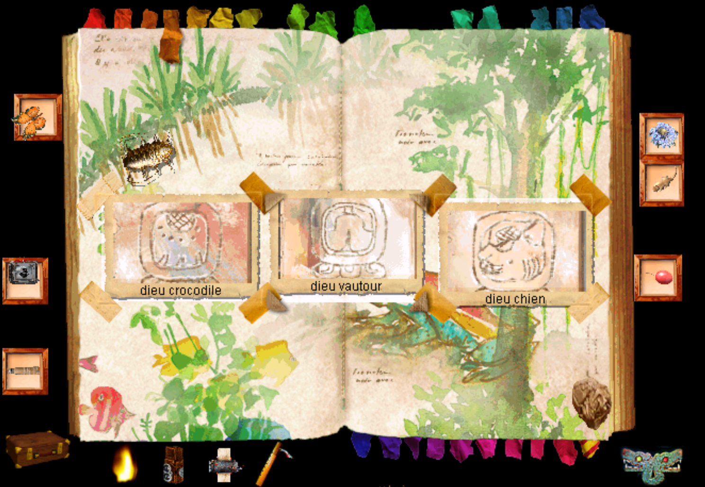
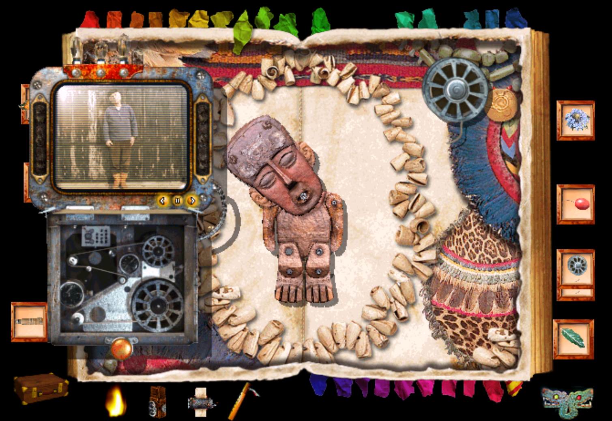
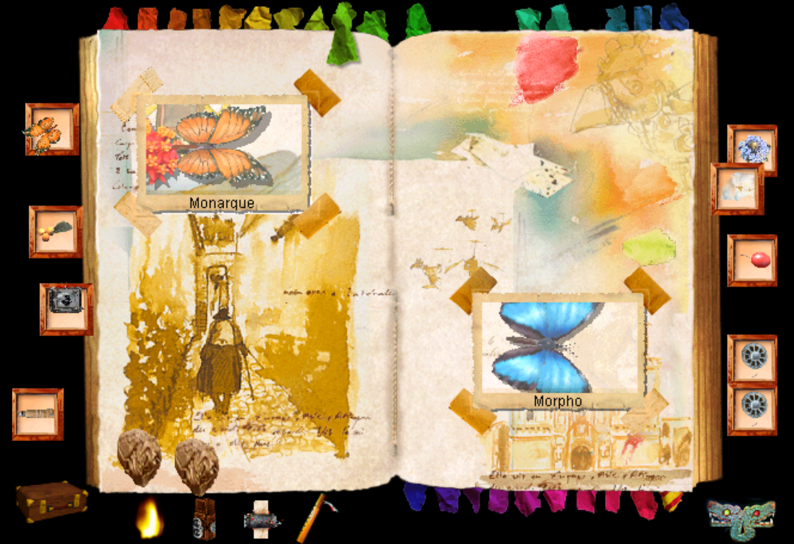
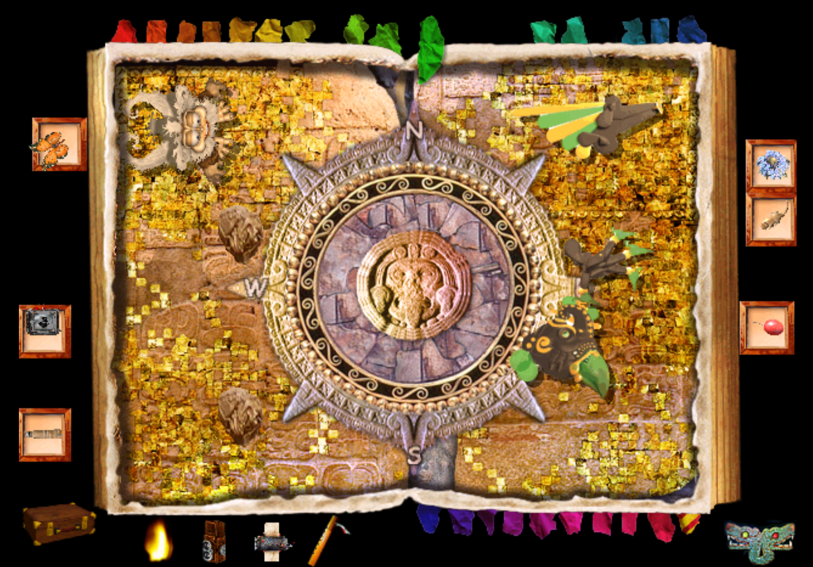
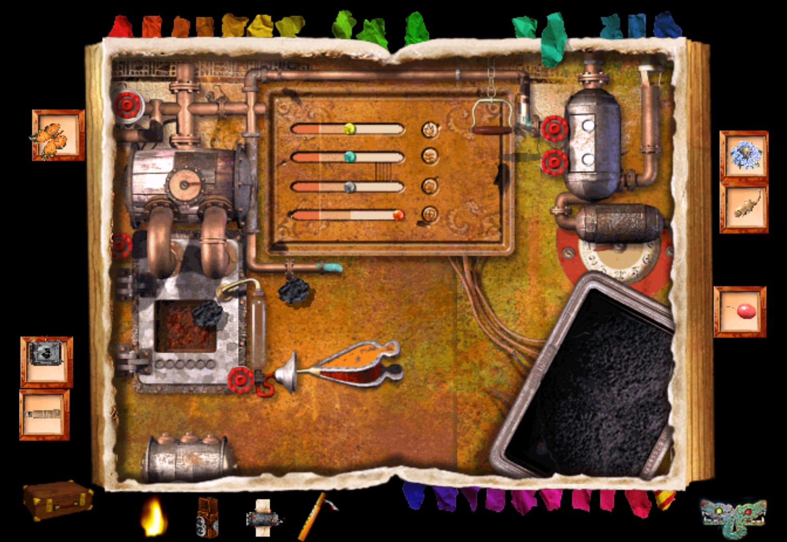
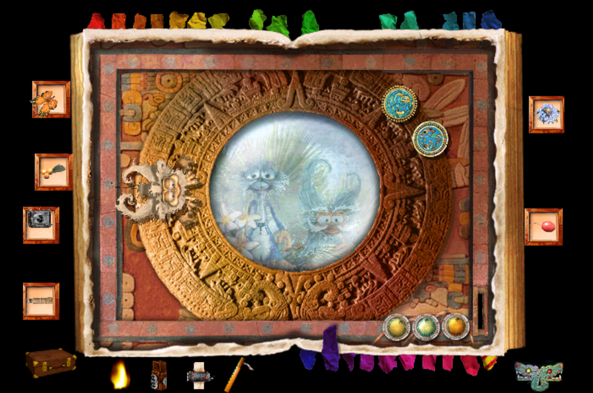
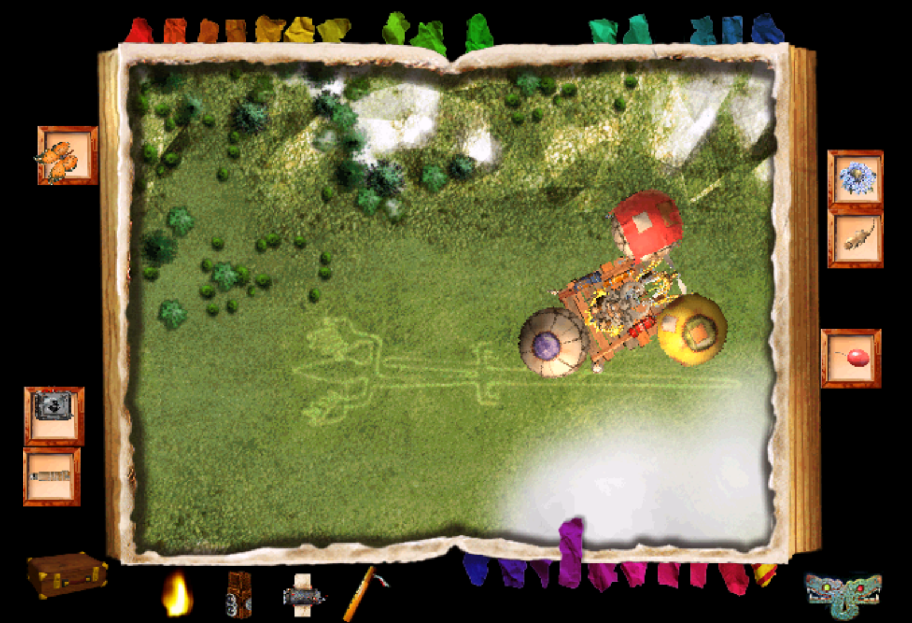
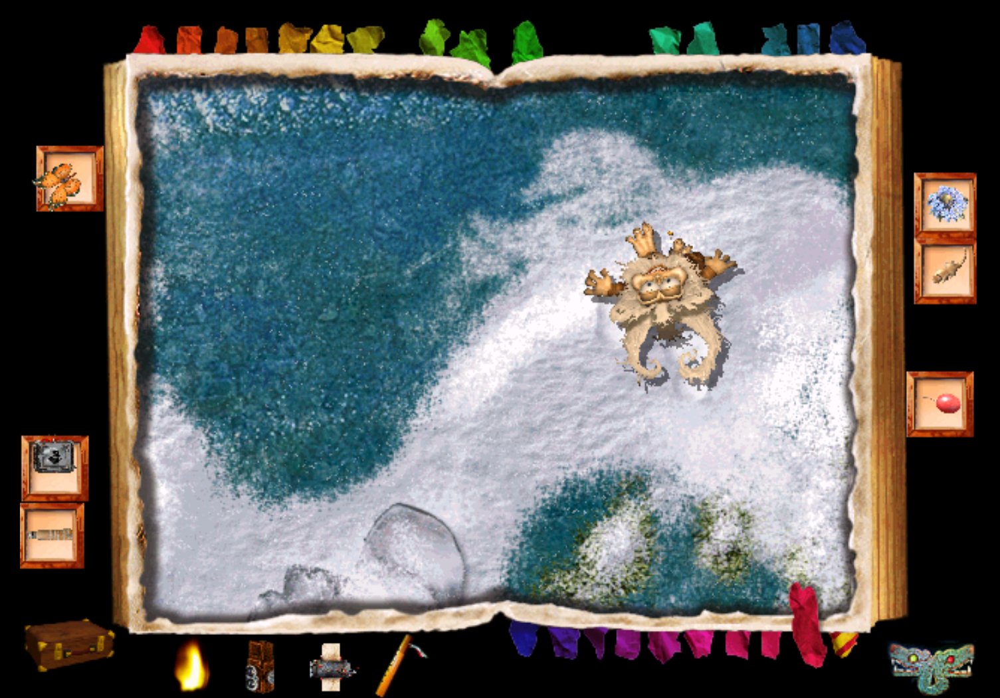

LE TEMPLE PERDU - SOLUTION DETAILLEE
Amazone
Pour couper la corde, permettant d’accéder à une nouvelle page, vous devrez la brûler. Pour y parvenir, vous devez faire du feu avec deux silex. La deuxième pierre se trouve sur la plage. Frottez les deux silex l’un sur l’autre au-dessus de la paille pour obtenir du feu.
Fleuve
Pour déplacer le radeau, vous devez étirer des lianes qui relient le radeau et les plots sur le bord de la rivière. Quand vous êtes bloqué, vous pouvez prendre de l’élan en ajoutant une liane à l’arrière du bateau et en la coupant ensuite. Vous pouvez ainsi accéder à la mine d’or et ramasser de nombreuses pépites.

Mine d’or
Dans la mine d’or, vous devez envoyer des bâtons de dynamite sur la roche qui scintille. Si la dynamite n’est pas bien placée, Chipikan peut lui donner un coup de pied pour la rapprocher de l’endroit où elle doit exploser. Une petite astuce : pour éviter de perdre des pépites d’or, allez les mettre au fur et à mesure dans la lucarne se trouvant au village inca.
Forêt vierge
Grâce au carnet secret, retrouvé dans la cabane de l’oncle Ernest, vous pouvez prendre en photographie les dieux. Si les insectes mangent vos photographies, vous pouvez vous en débarrasser en cliquant dessus.

Piranhas
Déplacez la grenouille d’îlot en îlot pour ne pas être attaqué par les piranhas. Gardez la souris près de la grenouille car en cliquant sur les piranhas vous pouvez les repousser.
Vallée sacrée
Pour entrer dans la page Punas, cliquez sur la lucarne qui se trouve sous une feuille et des timbres.
Punas
Vous devez attirer 5 fourmis dans chaque trou (ils se trouvent aux quatre coins de la page) grâce à des aliments sucrés, ce qui déclenche l’ouverture du passage secret de la vallée sacrée. Mais attention, n’oubliez pas d’attirer le Morpho grâce à la fleur bleue et prenez une photo de ce papillon, elle sera utile pour Cuzco.
Sorcier
Parmi les films que vous trouvez au cours du jeu, trois peuvent être utilisés dans cette page :le film de la danse de la pluie, qui se trouve dans la cabane, le film de la danse des vents, se trouvant dans l’atelier et enfin le film de la danse du soleil, que vous pouvez récupérer aux portes du soleil.
Pour réaliser une danse, cliquez sur le coquillage qui correspond à la danse que vous souhaitez faire et placez le bon film dans l’analyseur. Passez-vous le film mouvement par mouvement, ainsi il sera plus facile de repérer les gestes que vous devez faire pour compléter la danse.
Un conseil : faites tout d’abord la danse du soleil et ne faites les autres que si vous en avez besoin. Lorsque la danse du soleil sera faite, vous obtiendrez un morceau manquant du carnet secret.

Cuzco
Vous devez prendre des photos de deux papillons. Le Monarque se trouve dans la vallée sacrée et vous pouvez l’attirer avec une fleur rouge (elle se trouve dans la forêt vierge). Pour le prendre en photo, vous devez attendre que la chenille se transforme en papillon. Le Morpho se trouve dans la page Punas et il est attiré par une fleur bleue (elle se trouve à Cuzco).

Porte du soleil
Afin de reconstituer les codex, utilisez le carnet secret (vous l’avez trouvé dans la cabane). Pour annuler une malédiction, il faut trouver les bonnes combinaisons.
Cité du soleil
Dans un premier temps, il faut assembler l’aérocondor avec les 5 pièces que vous avez trouvées (une au communicateur, deux au lac glacé, une au canyon et une dans les hauts plateaux). Ajoutez ensuite le carburant que vous avez récupéré dans l’alambic.
Mais pour remplir toutes les conditions de vol, vous devrez aller jeter un coup d’œil dans le carnet secret qui vous explique que vous ne pouvez décoller que lorsque le vent vient du sud. Par conséquent, vous devrez retourner auprès du sorcier pour faire la danse de la pluie. Ensuite, revenez à la cité du soleil et vérifiez à l’aide d’un morceau de papier ou d’une feuille que le vent vient bien du sud (il faut qu’elle se déplace de bas en haut). Vous pouvez ensuite décoller face au Nord-Est (NE).
Si le mauvais sort s’acharne sur vous et que le sorcier n’est d’aucune aide, voici une petite astuce : tapez en même temps sur votre clavier N+S+L pour faire souffler le vent du sud.

Temple perdu
La statuette Mama Killa se trouve dans la page Lima. Une fois que vous vous trouvez à Lima, la statuette apparaîtra et vous pourrez prendre une photo que vous allez ensuite placer sur la page du temple perdu. Ainsi, vous accédez à la crypte.
Crypte
Le but du jeu est de déplacer les joyaux de crâne en crâne afin de les mettre à la bonne place. Chaque joyau doit ainsi se trouver à la place de l’œil scintillant de la couleur correspondante. Attention, observez bien les grimaces des têtes de mort, chaque forme de crâne a toujours le même effet.
Souterrain
Vous devez venir à bout de trois épreuves pour terminer le jeu. Dans la première, vous devez enfoncer des dalles éloignées les unes des autres en passant dessus suffisamment vite. Pour vous faciliter la tâche, vous pouvez mettre des pierres sur certaines dalles, ce qui vous laissera plus de temps pour enfoncer les autres. Placez ensuite Chipikan au centre du cercle de lumière. Dans la deuxième épreuve, vous n’avez qu’à ramasser la torche. Enfin pour la troisième épreuve, précipitez-vous vers les colonnes où les yeux sont allumés. Attention !, ils s’allument par alternance sur différentes colonnes.
Lima
Le morceau de carte manquant se trouve dans le bec d’un oiseau qui se trouve au Lac Titicaca. Pour faire tomber de son bec le morceau de papier, emmenez-le dans le village inca. L’oiseau mangera les mouches et il laissera tomber le morceau de carte manquant. Il ne vous restera plus qu’à le mettre à sa place.Locomotive
L’objectif est d’alimenter la locomotive en faisant en sorte que les indicateurs ne tombent jamais dans le rouge.

Hauts plateaux
Vous avez trois épreuves à passer. A chaque fois vous devez marquer trois paniers.
Village inca
Pour déplacer la boule de jade, utilisez le Kinkajou (il se trouve dans la page Amazone). Vous pourrez ensuite mettre les pépites d’or, que vous aurez récupérées dans la mine, dans la lucarne.
Atelier
Pour reconstituer les mosaïques, vous pouvez vous aider de la photo en bas de la page. Au deuxième niveau, utilisez la photo que vous avez trouvée dans la montagne sacrée.
Alambic
Les ingrédients nécessaires à la préparation sont les suivants :
- Piment rouge (Village inca),
- Patate douce (Désert infernal),
- Cephaelis elata, (Lac Titicaca),
- Una de Gato (Sorcier),
- Fittonia dbivenis (Vallée sacrée).
Il faut ensuite produire 3 préparations en dosant les 3 couleurs disponibles. Si on se trompe, on peut vider la préparation et recommencer. On obtient finalement le carburant de l'aérocondor.
Montagne sacrée
Pour reproduire les sons du coquillage, vous devez d’abord le récupérer sur la plage.
Communicateur
Pour écouter le message, vous devez mettre des jetons dans le communicateur. Il est possible d’en récupérer dans la page Lima et à la porte du soleil.

Désert infernal
Vous devez gonfler le plus vite possible les ballons. Celui qui reste gonflé le plus longtemps est le ballon jaune. Donc une fois que celui-ci est gonflé, vous pouvez en profiter pour gonfler les deux autres ballons.
Nazca
Tout d’abord, trouvez la cabane pour savoir quelles photographies vous devez prendre. Celle-ci se trouve sur une île. S’il y a trop de nuages, vous pouvez invoquer le dieu du soleil chez le sorcier.

Cabane
Pour obtenir le carnet secret, il faut photographier à Nazca :
- l’œil de baleine (en haut),
- les deux serres du condor (en bas),
- les pattes de l’araignée (en haut),
- les mains du singe (en haut).
Placez ensuite les photographies dans l’eau pour ouvrir le tiroir secret.
Plage
Pour reconstituer le puzzle, aidez-vous des pierres pour empêcher les morceaux de papier de s’envoler. Il faut, pour ouvrir le passage, faire disparaître tous les bords blancs. Pour vous aider, vous pouvez prendre une pierre supplémentaire sur la page canyon.
Canyon
La coccinelle est l’animal qui peut vous aider à pousser la bille. Cet insecte est caché dans la page Cuzco.
Lac Titicaca
Prenez une photo du Kinkajou que vous trouvez dans la page Amazone et une photo d’un insecte, l’Arlequin qui se trouve à la montagne sacrée.
Lac gelé
Vous allez trouver sur le lac deux pièces de l’aérocondor. Une de ces pièces se trouve à la fin de votre parcours en haut à gauche et l’autre est placée sous la glace.
